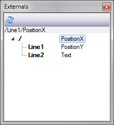

For compatibility reason older Ventuz remoting protocols before Ventuz 4 are maintained and still functional. The new DataModel introduced with the Template Engine of Ventuz 4 make these protocols only usable for imported scenes that map their Externals into the new SceneData template.
This documentation page is left as it was before Ventuz 4! Certain screenshots, terms and actions described here may not be valid anymore.
In order to access Properties, Methods and Events of a Ventuz Scene, it is necessary to externalize such elements. So called Externals are represented as concatenated names organized in a folder structure. Externals are always addressed with their full qualified name (e.g. /Line1/PositionY) where the leading / (slash) must always be present.
To externalize a member, click on the small square button next to the label of the Property, Method or Event while holding the CTRL key to externalize it. The button turns red to indicate an externalized member. Such members are called Externals.
External names are organized in a folder like structure. By default externalized members are found at the root level of a scene. Therefore all absolute external names are starting with a leading / (slash)
/PositionX /PositionY /Text
If the nodes that are providing these externals are located inside Containers, the containers themselves can be externalized as well. The container acts as a folder in that case. To externalize a container, the name of the container must as well follow the naming rules of externals before it can be externalized. Open the context menu by press&hold on the container in the Hierarchy or Content Editor and select Externalize. The name label of the container turns red to indicate an externalized container level. All members externalized inside such a container will be located under this new folder:
/Line1/PositionX /Line1/PositionY /Line1/Text /Line2/PositionX /Line2/PositionY /Line2/Text
Of course multiple nested externalized containers are possible. It is highly recommended to use folders to structure the scenes interface. Too much externals could make the handling very uncomfortable and name clashes could appear.
You can also use Scene Port nodes and let them act as an external folder. To externalize a Scene Port follow the same steps as to externalize a Container. If a Scene Port hosts a nested Scene (see Scene Management all externals of the inner scene will be subordinated under this externalized Scene Port. If the Scene Port node is not externalized the inner externals will not be visible!
To avoid runtime-name-clashes it is recommended to externalize all Scene Port Nodes which are hosting scenes with inner externals!
External names must be unique to be accessed correctly. If multiple externalized members or containers share the same name, the user gets warned in the Message Window. The scene will run correctly but externals with duplicate names will results in undefined behavior. Try to avoid name clashes - using folders helps a lot!
By default, members are externalized with their default member name (here PositionX and PositionY). This name can be changed by double-clicking on the red button. A simple dialog allows to assign a custom external name. To select the default name check the Inherit box.
To rename folders (containers) simply rename the externalized container in the Hierarchy or Content Editor by double-click on it. One can also rename externals in the Externals Editor (see below).
Names of externalized members must follow a naming rule in order to be accessible by certain software technologies like XML, OSC, C#, ... In other words, names are case-sensitive, the first character must be a letter and the following characters are letters, digits or the underscore sign. Any punctuation or spaces are not allowed.
NameStartChar ::= [A-Z] | [a-z] NameChar ::= NameStartChar | [0-9] | "_" ExternalName ::= NameStartChar (NameChar)*
To un-externalize a member either press Delete in the rename dialog or click on the red button in the Property Editor. To un-externalize a container simply select Externalize in the context menu again.
The Externals Editor allows viewing and editing all externals of a Scene. The left pane shows the entire folder structure where the right pane shows the externalized members within the selected folder.
Any changes in the structure of the externals of a scene are not immediately reflected in the Externals Editor until the Refresh button has been clicked.
To rename an external member select it and click on its name again. After a seconds the name becomes editable. Containers (folder) cannot be renamed this way. They have to be renamed in the Hierarchy or Content Editor.

Since Ventuz 4 the Externals Editor does not exist anymore. It has been replaced by the SceneData Edtior
Ventuz offers 4 different types of accessing the internal Scene Management, where the .net Remoting interface is the only interface that supports accessing the entire remoting functionality. All other interfaces provide only sub-sets and may add some application related extensions.
Ventuz Remoting is always a Peer-To-Peer communication. For each Ventuz machine within a cluster it can be necessary to create a separate connection to each machine. Currently there is no standard way of talking to a cluster of machines by default. If a cluster-remote is required the control software must handle this!
Ventuz Designer/Runtime can load, activate and unload scenes while it can read and write their externals. Multiple instances of the same scene can be held in memory!
Scenes are identified by their names. This name is called the Scene Identity. The scene identity is the filename of a scene including the path (without file extension) starting with a slash. They are handled case-insensitive because the Windows file system is case-insensitive too. To avoid any naming trouble it is recommend not to use special language specific characters (like German umlauts) for scene identities.
Example Scene Identities:
/Scene1 /Master /Slides/Type1 /Tables/Multi/GreenLayout2
If a scene has been loaded into memory by its Scene Identity it also gets assigned an Instance ID which uniquely identifies the in-memory scene. If a scene is unloaded the instance id becomes invalid. The Instance ID is represented by a four letter code to be human readable for easier debugging. The Stage Editor shows a complete overview of all loaded scenes and their Instance IDs. The Instance IDs are always displayed with a leading ? sign (question mark) to separate them from Scene Identities which are always starting with a slash /.
Example Instance IDs:
?HGRW ?KIHW ?NBQQ
Any remote connection to Ventuz will actually connect to a Scene instance. Every Scene in memory has its own remoting interface and provides the entire set of functionality. The first connection to a Ventuz machine connects to the current Layout scene.
The .net Remoting interface is the main control interface. All other interfaces access the .net Remoting interface internally. Therefore the .net Remoting provides 100% of the remoting functionality whereas the others may not!
There are currently two versions of Ventuz .net Remoting interfaces available. Version 1 is deprecated and not recommended to be used anymore. The interface will still remain in the future but is out of maintenance. Please use Ventuz .net Remoting 2
A connection to a Ventuz machine is performed via TCP binary communication, where the connection and the actual data transferred between server (Ventuz) and client (control software) is maintained by Microsoft .net Remoting communication layer. The first connection will return the RemoteScene object of the current Layout scene. This object is used to load and unload other scenes, query the list of Layout Scene Ports and activate scenes on that ports. If a scene is loaded, another RemoteScene object is returned. This object is used to access the externals of that scene.
The Ventuz Remoting SDK provides two .net assemblies:
Ventuz.Kernel.Remoting.dll Ventuz.Kernel.Remoting.Tools.dll
The Ventuz.Kernel.Remoting.dll contains all basic (shared) types needed to connect to a Ventuz system via .net remoting. The Ventuz.Kernel.Remoting.Tools.dll contains helper classes or wrappers for simplified handling of the raw remote interfaces. It is recommend to use these helpers but you don't have to.
For further details, please see the separate Ventuz Remoting API Help File in your installation folder.
The OSC remoting is a very simple way to access the externals of a scene or an entire scene-tree. Data send to Ventuz is always addressing the Layout scene (the root) of the entire scene-tree. The default layout scene does not have any externals, so that the externals of the first User Scene are located a the root /.
OSC remoting is not able to load or unload scenes by design. You must either load a scene automatically (VPR Presentation) or have a scene already loaded (Directer-Mode or Designer). See Deployment.
The big advantage of OSC Remoting is that it uses the connection-less UDP protocol which is also able to use multicast. Sending data or triggering animations to multiple machines becomes easy.
Currently the OSC timestamp is not supported to synchronize UDP multicast message on a Ventuz cluster
In order to set values on externalized properties simply send an OSC element with the full qualified name of the external used as the OSC address. The first argument is used as the value. If the argument type does not match the type of the externalized property, Ventuz tries to convert it. For strings it is recommended to use the Ventuz specific string type OscUnicodeString found in the Ventuz OSC SDK.
Reading values from externalized properties is not supported by OSC Remoting.
To trigger an externalized method send a blank OSC element to the OSC address matching the method. All OSC arguments are ignored.
In order to receive externalized events you have to configure an OSC NetReader and Ventuz must be configured to send out such events via OSC. See Machine Configuration and Ventuz OSC SDK.
Please note that OSC patterns are supported to address multiple externalized properties or methods with one single OSC element.
The Command Line Interface Remoting is a simple text based protocol to send commands in and to receive asynchronous events from. The TCP socket is configured in the Machine Configuration.
The advantage of the CLI Remoting is that other systems or applications that are not able to send .net Remoting commands can control Ventuz as well. Older control application my already be able to send text based commands to remote TCP sockets and become therefore compatible to Ventuz as long as the syntax of the actual commands is adjusted.
List of commands:
| Major Command | Minor Command | Description | Result | # of result lines |
|---|---|---|---|---|
| No command | 100 noop | 1 | ||
| ventuz. v. | ping p | Just returns an acknowledge. | 200 Ok | 2 |
| version v | Returns the version number. | 200 Version 4.0.0.0 Ventuz 4 | 3 | |
| id | Returns the id or machine ordinal. | 200 ID 3 | 2 | |
| gid | Returns the group id of this machine. | 200 GID 3 | 2 | |
| designmode design dm | Determines if Ventuz is running as Designer or not. | 200 DesignMode True 1 | 2 | |
| machinename name | Get the name of the machine of the connected Ventuz system. | 200 Name Ventuz1 | 2 | |
| getexistingscenes getscenes scenes | Returns a list of all available scenes in the current project. The number of returned scene names is specified after the result code. Names are HTML encoded. | 201 3 /Scene1 /Scene2 /Folder/Scene3 | 1+n | |
| clear clr | Clears the renderer by clearing the default port in the current layout. | 200 Cleared | 1 | |
| load loadorreuse | Load a scene or reuse the instance in memory. | 200 Loaded | 1 | |
| unloadall unld unl | Unload all scenes from memory and clear the output. | 200 All unloaded | 1 | |
| getloadedscenes getloaded | Returns a list of all scenes loaded in memory. The number of returned scene names is specified after the result code. Names are HTML encoded. | 201 2 /scene1 /scene2 | 1+n | |
| active act | Returns the scene name of the active scene. No scene name is returned if there is no active scene. | 202 Active /scene1 | 2 | |
| kill | Kills the Ventuz process without warning. | 0 | ||
| events ev | Enables async event reception. | 200 Events ON | 1 | |
| noevents noev | Disables async event reception. | 200 Events OFF | 1 | |
| Async event notification. The number of triggered events is specified after the result code. | 201 2 !</OnRepeat> !</AnimationDone> | 1+n | ||
| Named Scene: scene</scene1>. s</scene1>. Active Scene: scene. s. | activate act | Activates a scene. The renderer starts to render the scene. If no scene name is specified the current/active scene is addressed. | 200 Activated | 1 |
| validate val | Validates a scene (load all resources). This should be called after setting all properties and before activating the scene. | 200 Validated | 1 | |
| unload unld unl | Unloads the specified scene and clears the render output if this scene was the active one. | 200 Unloaded | 1 | |
| getexternals externals ext | Returns a list of all externalized properties, methods and events. The number of returned External Infos is indicated after the result code. Type is either AssetURI, Boolean, Color, Enum, Event, Float, Integer, Method, String or Unknown. | 200 3 /Line1/PositionX Float /Line1/PositionY Float /Line1/Text String | 1+n | |
| </Line1/PositionX>=123 | Sets the value of a property. The text after the '=' sign is web decoded before forwarded to Ventuz. The HTML encoded text is significant directly after the '=' character. | 200 Ok | 1 | |
| </Line1/PositionX>? | Gets the value of a property. The value returned is the invariant culture string representation of the value. Strings are HTML encoded. | 204 Value 123.0 | 2 | |
| </Line1/Play> | Invokes a method. | 200 Invoked | 1 | |
| quit bye exit | Closes TCP connection. | 200 Quit | 1 |
The current version of the Command Line Interface is not able to deal with multiple instances of the same Scene, because Scenes are addressed only by their Scene Identity. Also Layouts with multiple Ports are not supported. Activating a Scene always uses Port !#0 - the default Port
Establish a connection to the target machine via telnet.
telnet hostname port(configured in the Machine Configuration)
Simple example of a CLI communication.
This remoting protocol is a proprietary XML based communication protocol used for Vertigo Suite and X-3D / X-Ventuz. The Vertigo Suite is used for high-end TV-broadcast solutions. Please contact Miranda for details.